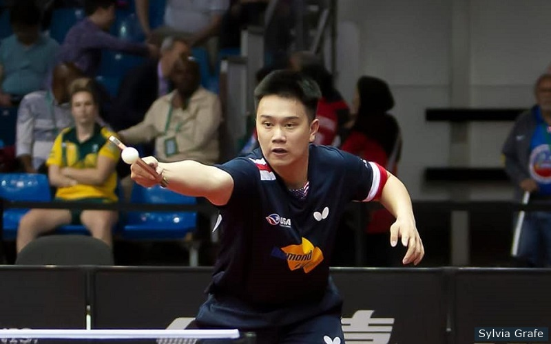
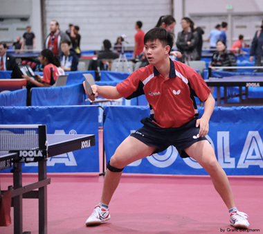

Victor Liu
Pre Business
I am currently in my first year at UC Riverside. I am a Pre-Business Major and hoping to learn more about accounting or marketing. I held a sales job a family owned marble and granite company last summer and learned many things from a salesmen perspective. As I worked as a salesman I retained product, service and company policy knowledge to serve as a resource for both coworkers and customers. I had to answer incoming telephone calls to provide information about products, services, store hours, policies and promotions. I kept apprised of emerging trends and provided informative customer service to assist in product selection, maintained knowledge of current promotions, exchange guidelines, payment policies, and security practices, offered product and service consultations and employed upselling techniques, and sold various products by explaining unique features and educating customers on proper application. I also had to make sure merchandise for the sales floor was ready by marking items with identifying codes and accurate pricing. Being gifted with that opportunity I was able to see real life examples of customer interactions and market trends. I believe I am a professional and well-grounded office team member with superior clerical skills. Successful at satisfying customer needs while meeting and exceeding business objectives. Smoothly handles all types of administrative tasks, including coordinating mail, records and travel arrangements. I am also reliable Sales Associate with strengths in inventory management, training and customer service. Friendly, knowledgeable and hard-working team player. Proven success in satisfying sales objectives and securing repeat patronage.
I also worked a coach at a table tennis club where I maintained safety of training, individual exercises, and equipment usage to avoid sports injuries and damage to the facility.
I also worked with both adults and minors in an attempt to further their table tennis skills During my time there I oversaw rigorous practice sessions to enhance individual skills, showed athletes proper techniques to avoid injuries, developed professional relationships with club members, ran drills and practices to help to develop and improve sports skills and developed training and exercise programs to meet individual requirements. After my time as a coach, I worked at a 3D design company. During my time there I updated financial, customer and business records with accurate information each day, preventing data loss and keeping files current, managed reception and lobby area, greeted visitors and responded to requests for information, produced professional and error-free letters, presentations and spreadsheets, received and screened a high volume of internal and external communications, and I also organized files, developed spreadsheets, faxed reports and scanned documents.
Some of the skills I have that make me stand out when compared to my peers are my ability to speak two languages, Mandarin and English, my experience in both sales and as a office assistant, and my hardworking personality. I am also fluent in Photoshop and Microsoft Office applications, two skills that are essential to our technology filled world now.
Enter bio here
Experience
Education
UC Riverside
University of California Riverside
University of California Riverside
Portfolio

